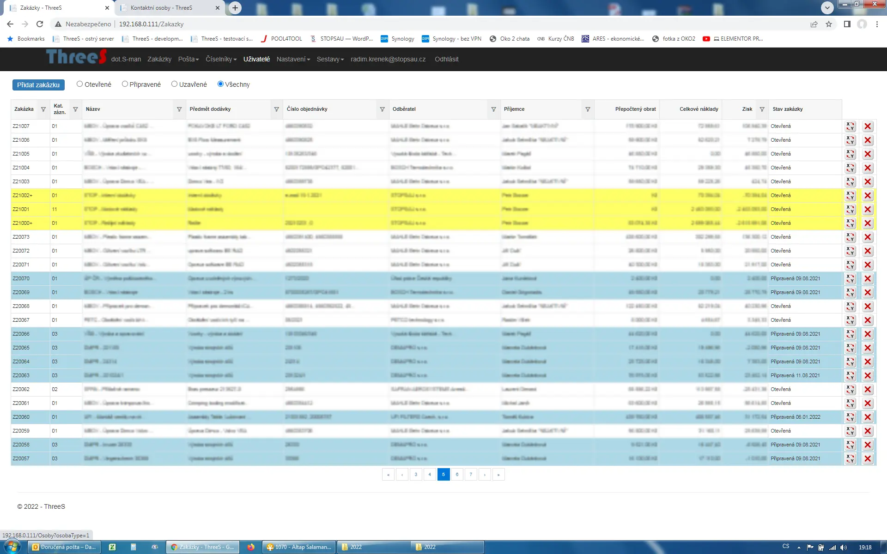
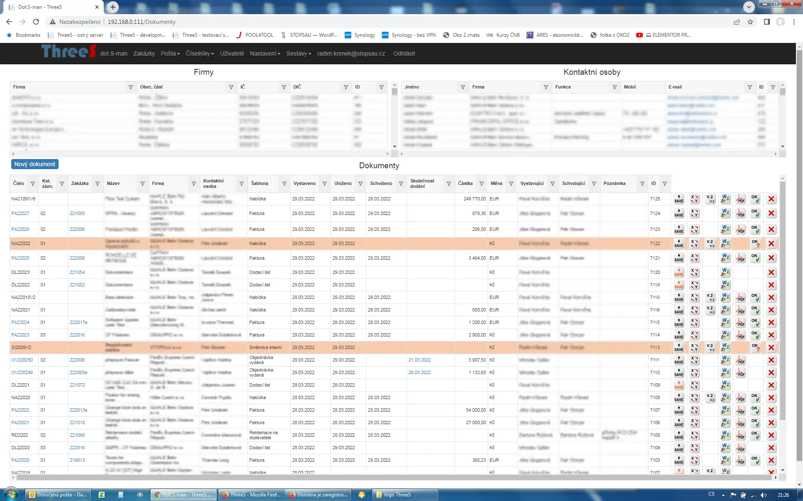
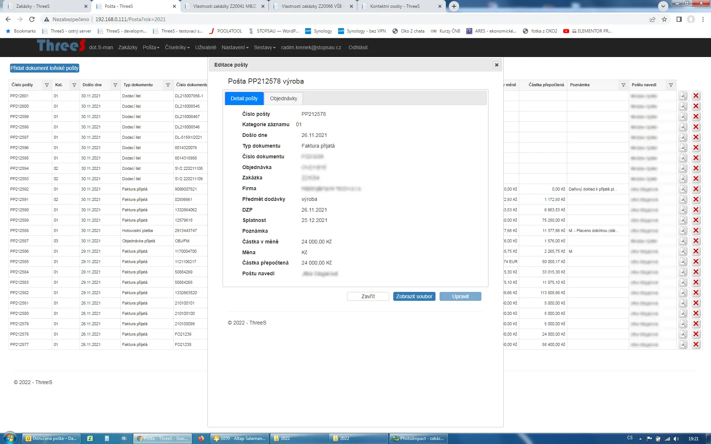

ThreeS je webová aplikace určená pro komplexní správu firemních procesů, projektů a dokumentace. Ucelený pohled na zakázky bez složitosti velkých korporátních neohrabaných systémů.

ThreeS je informační systém určený pro malé až střední firmy. Na nic si nehraje. Nechce svými možnostmi konkurovat velkým korporátním systémům, ale nabízí chytrá, ucelená a bezpečná řešení.
Ucelený pohled na řízení zakázek, náklady, správu interních dokumentů a evidenci pošty na jednom místě.
Všechny vytvářené dokumenty (nabídky, objednávky, atd.) automaticky přebírají atributy zadané zakázky.
Součástí systému jsou funkce pro správu fakturací. Získáte okamžitý přehled finančního stavu a plnění termínů.
Pokud používáte pro přehled o svých zakázkách jen "chytrou" excelovou tabulku, nastane jednoho dne okamžik, kdy vás přestane bavit její neustálé rozšiřování, tvorba vazeb či psaní maker.
To je také důvod, proč ThreeS vznikl. Aby ušetřil uživatelům čas s vymýšlením pravidel, a oni se mohli orientovat výhradně na samotné informace potřebné pro růst byznysu. ThreeS umožňuje okamžitý přístup ke všem potřebným informacím vašich zakázek.

Zde se vytváří všechny interní dokumenty - nabídky, objednávky, harmonogramy, dodací listy, předávací protokoly, faktury, směrnice, prohlášení o shodě a mnohé jiné.
Modul Zakázky poskytuje strukturovaný přehled nákladů, termínů, dokumentů, veškeré příchozí pošty atp. Vše je jasně vztaženo ke každé zakázce samostatně.
Modul Pošta eviduje příchozí komunikaci a umožňuje její efektivní a rychlé třídění podle zakázek a priorit.

ThreeS běží na vzdáleném serveru a klade extrémní důraz na zabezpečení vašich dat a informací. Aplikace může být součástí vašeho stávajícího systému, nebo nainstalovaná na pronajatém serveru.
Veškeré připojení uživatelů probíhá šifrovaně.
I při fyzickém přístupu k disku je nelze v systému bez oprávnění přečíst.
Několikastupňová úroveň uživatelských oprávnění s detailním nastavením.
Potřebujete znát podrobnosti nebo si chcete ThreeS rovnou vyzkoušet na vlastní kůži? Ozvěte se nám k dohodnutí přístupu do DEMO verze.
Jste začínající firma, hlídáte si každou korunu a bojíte se, že pořízení systému pro vás bude finančně neúnosné? Ozvěte se, určitě najdeme řešení.